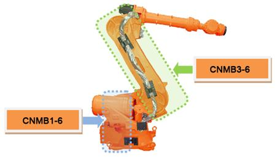

Previous error code: E0112 (¡Û axis) IPM fault
1.1.63.1. Outline
A fault output has occurred from an IPM (Intelligent Power Module) – a switch device inside of Servo Drive Unit that drives the motor. IPM fault may occur due to an increased temperature of heat sink, IPM¡¯s control voltage reduction or an over-current output.
1.1.63.2. Causes and examine methods
|
< Error occurs at a certain step > (1) Please examine the robot at the step that an error occurs, n Please examine the robot¡¯s wiring at the location where the error occurs. n Please reduce the speed of robot¡¯s operation in order to confirm the error n Please make changes on teached step¡¯s interpolation and confirm the error. |
(1) Please examine the Robot at the step that an error occurs.
If IPM fault error occurs at a certain step, it may occur when the device wiring has been damaged at teached step or the axis speed changed greatly when the teached program changes the position.
n Examine the internal wiring at the location of an error
Examine the wiring status of corresponding axis that connected to the motor (inside of Robot). During the examination, please turn off the controller¡¯s power and remove the output connector from the Servo Drive Unit. After that please measure the resistance value between grounds of each phases (cable side) to test a short circuit.

Figure 1.178 Location of Wiring Examination for Each Axis (HS165)
n Reduce the speed of Robot¡¯s operation in order to confirm the error
If an error occurs at a step that generates rapid changes of axis speed which is caused by the position changes of Robot, reduce the operation speed to confirm the error. If the error does not persist after the speed is reduced, please change the Teach speed of corresponding step and record the job program to use.
n Change the teached step¡¯s interpolation to confirm the error
If the axis speed rapidly changes even after the operation speed is reduced by 75%, please change the teached step¡¯s interpolation to ¡®P¡¯ and confirm the error. If the changes on interpolation resolve the error, (at the same operation speed) please modify the Teach.